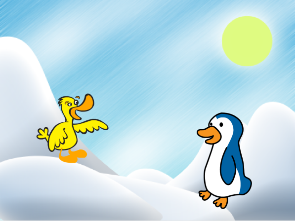
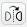

Home > Projects > Scratch > A Conversation
A Conversation
by Google CS First
Modified by Rhys Moyne
License: CC-BY-SA 4.0
Introduction
In this project you will create a conversation between two or more characters. You will learn how to add sprites, a backdrop and how to properly sequence a conversation.

Creative Challenges
Choose from one of the following creative challenges in order to complete this project (or design your own):
Create a conversation between three characters in which one of the characters is really small (hint: you will need to use the and buttons to grow or shrink a sprite)
Create a conversation in which one of the characters is injured from falling out of a tree/truck/car
Create a conversation that features a joke
Your own creative challenge (please discuss with your teacher/supervisor before continuing)
Step 1: Choose a setting
First, choose a suitable backdrop to suit the theme of your story.
Checklist
- Click on and choose a suitable backdrop for your conversation.
Step 2: Choose your characters
Choose the characters that you want in your story.
Checklist
Click on
 and choose each character you want in the conversation.
and choose each character you want in the conversation.Place the characters in the scene as you want them. To face a character in the opposite direction, click on the 'Costumes' tab and click on the 'Flip left-right' button which looks like this: 
Step 3: Sequence the conversation
Now it is time to create the conversation. It may help you if you write down your conversation on paper first.
Checklist
- Select the sprite that will speak first. Drag out the following two blocks:
when green flag clicked
say [Hello] for [2] secs
Click once in the 'Hello' section and type in the first sentence this character will say.
Test your program works by clicking on the green flag
Now choose the next character that will speak and add the following three blocks:
when green flag clicked
wait [2] secs
say [Hello] for [2] secs
Notice that we have to tell the character to wait two seconds before speaking. Change the 'Hello' to the first sentence this character will say. What would happen if you did not have this block?
Test that your program works by clicking on the green flag
Continue adding the sentences of your conversation to each of the characters, remembering to use the
waitblock so that the conversation is sequenced correctly.When you are finished, test your program works by clicking on the green flag
Finished?
When you are finished, share your creation in the Scratch Project Gallery!
I'm done!